Project 2: Local Feature Matching
Interest points
The first part is finding a set of distinctive keypoints in the following steps:
- Computed the horizontal and vertical derivatives of the image Ix and Iy by convolving the original image with Gaussians.
- Computed the outer products of these gradients, Ixx, Ixy, Iyy.
- Convolved each of these images with a larger Gaussian.
- Computed a scalar corner score using R = det(m) - trace(m)^2.
- Finding local maxima above a certain threshold and report them as detected feature point locations.
I used BWCONNCOMP to find connected components in thresholded binary image. To get better key points, I also toned the the standard deviation and size of the gaussian blur, alpha of corner function and the threshold. Changing standard deviation from 1 to 0.5 in gaussian filter produced me a better distribution of key points, and improved the accuracy by 10%. Changing the threshold from 0.0001 to 0.045 reduced the noice of sample, and improved the accuracy by 10%. Changing alpha of corner from 0.04 to 0.045 improved the accuracy by 5%.
Example of code
function [x, y, confidence, scale, orientation] = get_interest_points(image, feature_width)
alpha = 0.045;
threshold = 0.02;
gaussian = fspecial('gaussian',[4, 4], 1);
second_gaussian = fspecial('gaussian',[6, 6], 0.5);
image = imfilter(image,diff(gaussian);
height = size(image,1);
width = size(image,2);
[Ix,Iy] = imgradientxy(image);
Ixx = Ix.*Ix;
Iyy = Iy.*Iy;
Ixy = Ix.*Iy;
Ixx = imfilter(Ixx,second_gaussian);
Iyy = imfilter(Iyy,second_gaussian);
Ixy = imfilter(Ixy,second_gaussian);
R = Ixx.*Iyy - Ixy.*Ixy - alpha * (Ixx + Iyy) .* (Ixx + Iyy);
binary_mat = R > threshold;
connected_component = bwconncomp(binary_mat);
x = [];
y = [];
for count = 1 : size(connected_component.PixelIdxList,2)
mat = cell2mat(connected_component.PixelIdxList(count));
max = 0;
i = 1;
for item = 1:size(mat,1)
if R(mat(item)) > max
max = R(mat(item));
i = mat(item);
end
end
y = [y mod(i, height)];
x = [x fix(i / height) + 1];
end
y = y';
x = x';
end

Example of a hybrid image.
Local feature description
I implemented a SIFT-like local feature description with 4 * 4 grid of cells. Each cell has a histogram of the local distribution of gradients in 8 orientations. 4x4 x 8 = 128 dimensions are formed by appending these histograms together. I used oriented filters to place the right magnitude value on different directions.
Example of code
% Local Feature Stencil Code
function [features] = get_features(image, x, y, feature_width)
features = zeros(size(x,1),128);
height = size(image,1);
width = size(image,2);
filter = fspecial('gaussian',[3 3],2);
filtered_image = imfilter(image,filter);
[Gmag,Gdir] = imgradient(filtered_image);
for i = 1:size(x,1)
current_x = x(i,:);
current_y = y(i,:);
if current_x > feature_width/2 & current_x < (width - feature_width/2) & current_y > feature_width/2 & current_y < (height - feature_width/2)
Gmag_patch = Gmag(current_y-(feature_width/2)+1:current_y+feature_width/2,current_x-(feature_width/2)+1:current_x+feature_width/2);
Gdir_patch = Gdir(current_y-(feature_width/2)+1:current_y+feature_width/2,current_x-(feature_width/2)+1:current_x+feature_width/2);
feature = [];
for j = 1 : 4 : size(Gmag_patch,1)
for k = 1 : 4 : size(Gmag_patch,2)
mag_cell = Gmag_patch(j : j+3,k : k+3);
dir_cell = Gdir_patch(j : j+3, k : k+3);
bin = zeros(1,8);
for m =1:size(mag_cell,1)
for n=1:size(mag_cell,2)
if dir_cell(m,n) >= 45 && dir_cell(m,n) < 90
bin(1) = bin(1) + mag_cell(m,n);
elseif dir_cell(m,n) >= 100 && dir_cell(m,n) < 135
bin(2) = bin(2) + mag_cell(m,n);
elseif dir_cell(m,n) >= 135 && dir_cell(m,n) < 180
bin(3) = bin(3) + mag_cell(m,n);
elseif dir_cell(m,n) >= 180 && dir_cell(m,n) < -135
bin(4) = bin(4) + mag_cell(m,n);
elseif dir_cell(m,n) >= -135 && dir_cell(m,n) < -90
bin(5) = bin(5) + mag_cell(m,n);
elseif dir_cell(m,n) >= -90 && dir_cell(m,n) < -45
bin(6) = bin(6) + mag_cell(m,n);
elseif dir_cell(m,n) >= -45 && dir_cell(m,n) < 0
bin(7) = bin(7) + mag_cell(m,n);
else
bin(8) = bin(8) + mag_cell(m,n);
end
end
end
feature = [feature bin];
end
end
features(i,:) = feature./norm(feature);
end
end
features = features .^ .7;
end
Feature matching
I implemented the "ratio test" or "nearest neighbor distance ratio test" method of matching local features as described in the lecture. Norm function made my program clear and faster. I used the norm function calculate the euclidean distance between two features and sort the final result which has with the most confident.
Example of code
function [matches, confidences] = match_features(features1, features2)
for i = 1 : size(features1, 1)
for j = 1 : size(features2, 1)
% Euclidean norm between items in two features
distance(j) = abs(norm(features1(i, :) - features2(j, :)));
end
[sorted, ind] = sort(distance, 'ascend');
confidences(i) = sorted(1) / sorted(2);
matches(i, 1) = i;
matches(i, 2) = ind(1);
end
% Sort the matches so that the most confident onces are at the top of the
% list.
[confidences, ind] = sort(confidences, 'descend');
matches = matches(ind,:);
Table of Results
|
key interest points matching lines matching evaluation |
|
Using get_interest_points.m, Accuracy: 35% 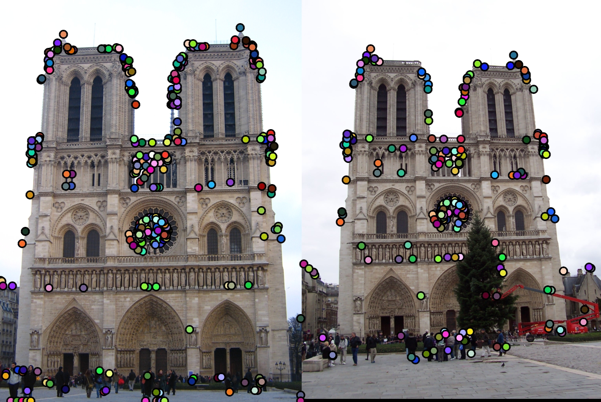 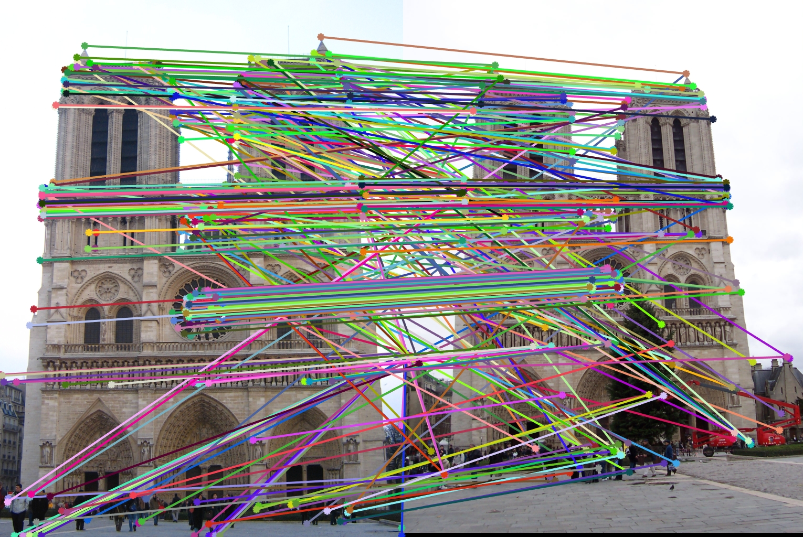 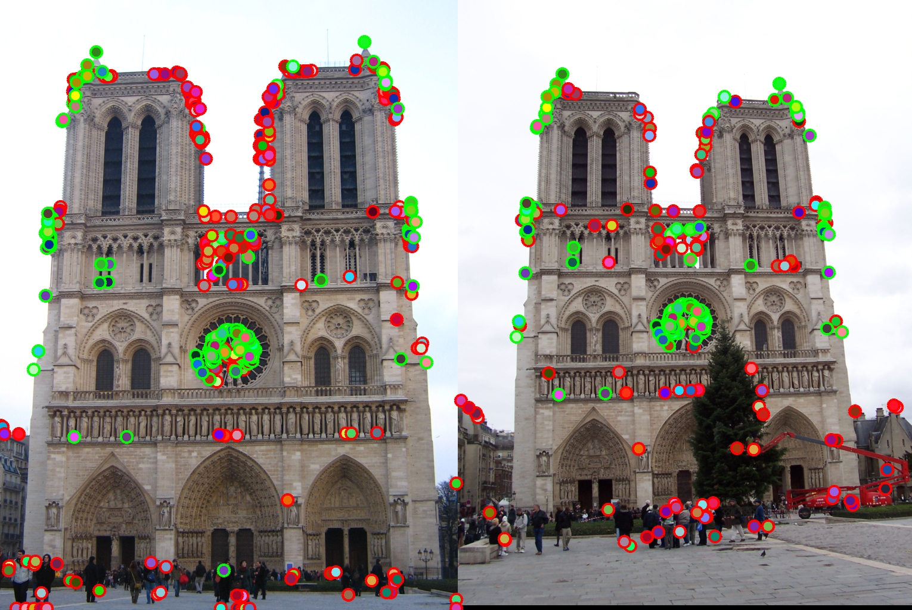 |
|
Using cheat_interest_points.m, Accuracy: 60% 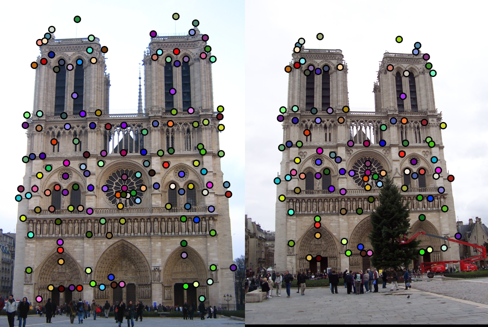 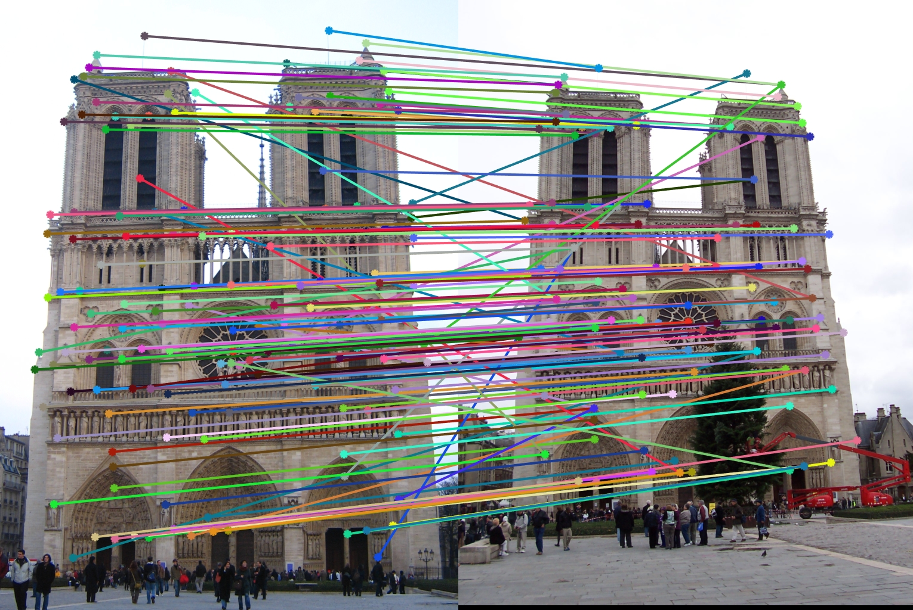 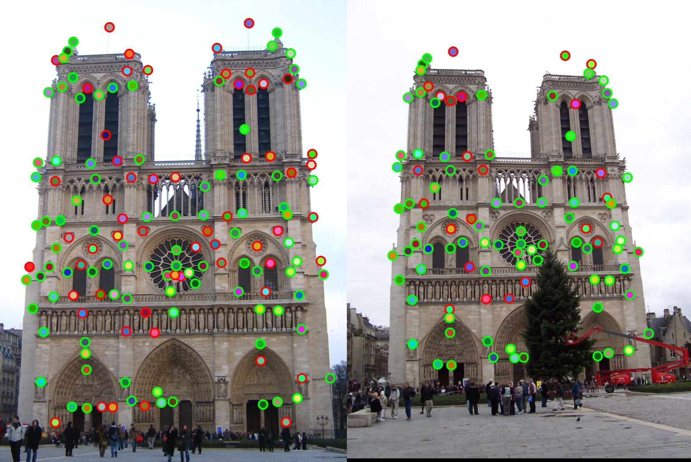 |
|
Using get_interest_points.m, Accuracy: 20% 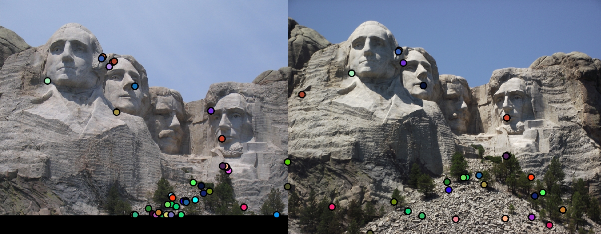 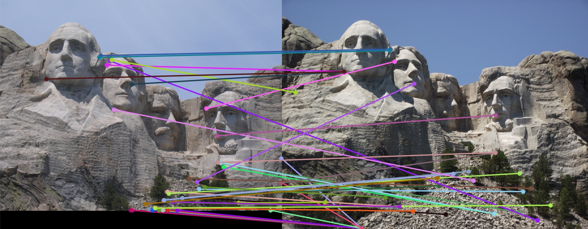 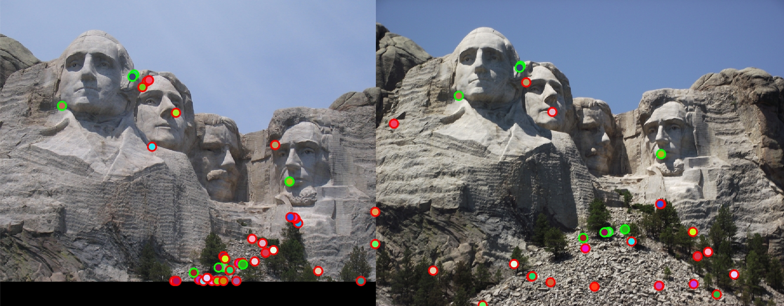 |
|
Using get_interest_points.m, Accuracy: 10% 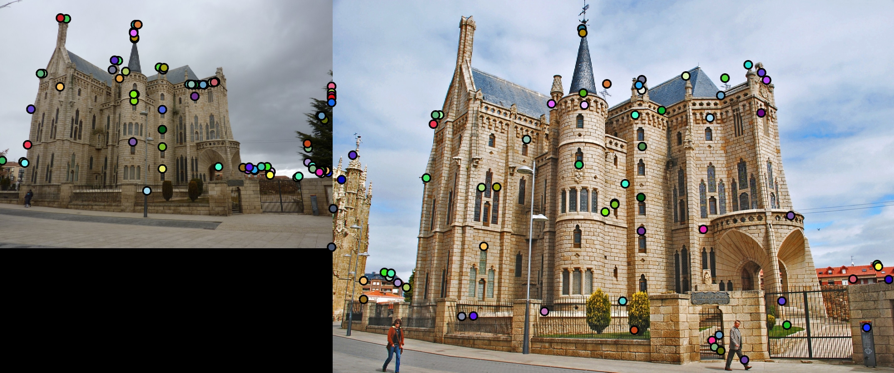 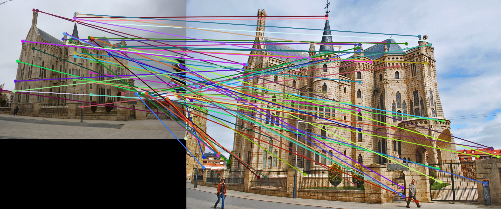 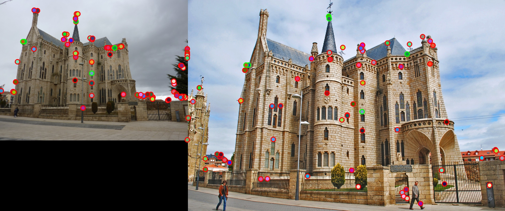 |